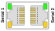

Serial Onboard Pin Mapping
Serial Onboard Pin Mapping — Reference information about the serial onboard connector
Serial D-Sub 9 Male Onboard Connector:
Pin
RS-232
RS-422/RS-485
1
2
Rx
Rx(+)
3
Tx
Tx(+)
4
5
Ground
Ground
6
7
RTS
Tx(-)
8
CTS
Rx(-)
9
Pulse Real-Time Target Serial Interface:

RJ45 Pin
RS-232
RS-422/RS-485
D-Sub 9 Pin
Pin 1
-
-
-
Pin 2
-
-
-
Pin 3
RXD
RX+
Pin 2
Pin 4
TXD
TX+
Pin 3
Pin 5
RTS#
TX-
Pin 7
Pin 6
CTS#
RX-
Pin 8
Pin 7
-
-
-
Pin 8
Ground
Ground
Pin 5